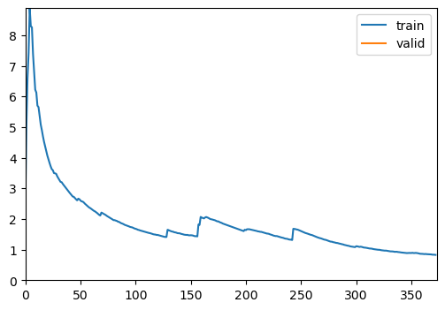
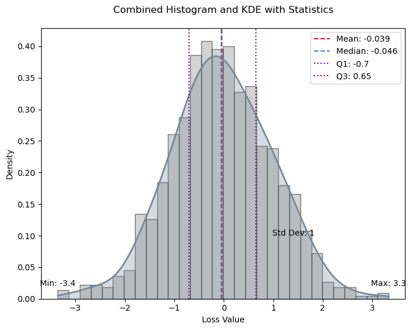

from monai.networks.nets import SEResNet50
from bioMONAI.data import BioDataLoaders
from pathlib import Path
import numpy as npCore
bioMONAI core functions
Imports
This section includes essential imports used throughout the core library, providing foundational tools for data handling, model training, and evaluation. Key imports cover areas such as data blocks, data loaders, custom loss functions, optimizers, callbacks, and logging.
DataBlock
DataBlock (blocks:list=None, dl_type:TfmdDL=None, getters:list=None, n_inp:int=None, item_tfms:list=None, batch_tfms:list=None, get_items=None, splitter=None, get_y=None, get_x=None)
Generic container to quickly build Datasets and DataLoaders.
| Type | Default | Details | |
|---|---|---|---|
| blocks | list | None | One or more TransformBlocks |
| dl_type | TfmdDL | None | Task specific TfmdDL, defaults to block’s dl_type orTfmdDL |
| getters | list | None | Getter functions applied to results of get_items |
| n_inp | int | None | Number of inputs |
| item_tfms | list | None | ItemTransforms, applied on an item |
| batch_tfms | list | None | Transforms or RandTransforms, applied by batch |
| get_items | NoneType | None | |
| splitter | NoneType | None | |
| get_y | NoneType | None | |
| get_x | NoneType | None |
The DataBlock class acts as a container for creating data processing pipelines, allowing easy customization of datasets and data loaders. It enables the definition of item transformations, batch transformations, and dataset split methods, streamlining data preprocessing and loading across various stages of model training.
DataLoaders
DataLoaders (*loaders, path:str|pathlib.Path='.', device=None)
Basic wrapper around several DataLoaders.
The DataLoaders class is a container for managing training and validation datasets. This class wraps one or more DataLoader instances, ensuring seamless data management and transfer across devices (CPU or GPU) for efficient training and evaluation.
Learner
Group together a model, some dls and a loss_func to handle training
The Learner class is the main interface for training machine learning models, encapsulating the model, data, loss function, optimizer, and training metrics. It simplifies the training process by providing built-in functionality for model evaluation, hyperparameter tuning, and training loop customization, allowing you to focus on model optimization.
ShowGraphCallback
ShowGraphCallback (after_create=None, before_fit=None, before_epoch=None, before_train=None, before_batch=None, after_pred=None, after_loss=None, before_backward=None, after_cancel_backward=None, after_backward=None, before_step=None, after_cancel_step=None, after_step=None, after_cancel_batch=None, after_batch=None, after_cancel_train=None, after_train=None, before_validate=None, after_cancel_validate=None, after_validate=None, after_cancel_epoch=None, after_epoch=None, after_cancel_fit=None, after_fit=None)
Update a graph of training and validation loss
The ShowGraphCallback is a convenient callback for visualizing training progress. By plotting the training and validation loss, it helps users monitor convergence and performance, making it easy to assess if the model requires adjustments in learning rate, architecture, or data handling.
CSVLogger
CSVLogger (fname='history.csv', append=False)
Log the results displayed in learn.path/fname
The CSVLogger is a tool for logging model training metrics to a CSV file, offering a permanent record of training history. This feature is especially useful for long-term experiments and fine-tuning, allowing you to track and analyze model performance over time.
cells3d
cells3d ()
3D fluorescence microscopy image of cells.
The returned data is a 3D multichannel array with dimensions provided in (z, c, y, x) order. Each voxel has a size of (0.29 0.26 0.26) micrometer. Channel 0 contains cell membranes, channel 1 contains nuclei.
The cells3d function returns a sample 3D fluorescence microscopy image. This is a valuable test image for demonstration and analysis, consisting of both cell membrane and nucleus channels. It can serve as a default dataset for evaluating and benchmarking new models and transformations.
Engine
The engine module provides advanced functionalities for model training, including configurable training loops and evaluation functions tailored for bioinformatics applications.
read_yaml
read_yaml (yaml_path)
Reads a YAML file and returns its contents as a dictionary
dictlist_to_funclist
dictlist_to_funclist (transform_dicts)
fastTrainer
fastTrainer (dataloaders:fastai.data.core.DataLoaders, model:<built- infunctioncallable>, loss_fn:typing.Any|None=None, optimizer :fastai.optimizer.Optimizer|fastai.optimizer.OptimWrapper=<f unction Adam>, lr:float|slice=0.001, splitter:<built- infunctioncallable>=<function trainable_params>, callbacks:f astai.callback.core.Callback|collections.abc.MutableSequence |None=None, metrics:typing.Any|collections.abc.MutableSequen ce|None=None, csv_log:bool=False, show_graph:bool=True, show_summary:bool=False, find_lr:bool=False, find_lr_fn=<function valley>, path:str|pathlib.Path|None=None, model_dir:str|pathlib.Path='models', wd:float|int|None=None, wd_bn_bias:bool=False, train_bn:bool=True, moms:tuple=(0.95, 0.85, 0.95), default_cbs:bool=True)
A custom implementation of the FastAI Learner class for training models in bioinformatics applications.
| Type | Default | Details | |
|---|---|---|---|
| dataloaders | DataLoaders | The DataLoader objects containing training and validation datasets. | |
| model | callable | A callable model that will be trained on the dataset. | |
| loss_fn | typing.Any | None | None | The loss function to optimize during training. If None, defaults to a suitable default. |
| optimizer | fastai.optimizer.Optimizer | fastai.optimizer.OptimWrapper | Adam | The optimizer function to use. Defaults to Adam if not specified. |
| lr | float | slice | 0.001 | Learning rate for the optimizer. Can be a float or a slice object for learning rate scheduling. |
| splitter | callable | trainable_params | |
| callbacks | fastai.callback.core.Callback | collections.abc.MutableSequence | None | None | A callable that determines which parameters of the model should be updated during training. |
| metrics | typing.Any | collections.abc.MutableSequence | None | None | Optional list of callback functions to customize training behavior. |
| csv_log | bool | False | Metrics to evaluate the performance of the model during training. |
| show_graph | bool | True | Whether to log training history to a CSV file. If True, logs will be appended to ‘history.csv’. |
| show_summary | bool | False | The base directory where models are saved or loaded from. Defaults to None. |
| find_lr | bool | False | Subdirectory within the base path where trained models are stored. Default is ‘models’. |
| find_lr_fn | function | valley | Weight decay factor for optimization. Defaults to None. |
| path | str | pathlib.Path | None | None | Whether to apply weight decay to batch normalization and bias parameters. |
| model_dir | str | pathlib.Path | models | Whether to update the batch normalization statistics during training. |
| wd | float | int | None | None | |
| wd_bn_bias | bool | False | |
| train_bn | bool | True | |
| moms | tuple | (0.95, 0.85, 0.95) | Tuple of tuples representing the momentum values for different layers in the model. Defaults to FastAI’s default settings if not specified. |
| default_cbs | bool | True | Automatically include default callbacks such as ShowGraphCallback and CSVLogger. |
Example: train a model with configuration from a YAML file.
# Import the data
image_path = '_data'
info = download_medmnist('bloodmnist', image_path, download_only=True)
batch_size = 32
path = Path(image_path)/'bloodmnist'
path_train = path/'train'
path_val = path/'val'Dataset 'bloodmnist' is already downloaded and available in '_data/bloodmnist'.# Define the dataloader
data = BioDataLoaders.class_from_folder(
path,
train='train',
valid='val',
vocab=info['label'],
batch_tfms=None,
bs=batch_size)
# Define the model
model = SEResNet50(spatial_dims=2,
in_channels=3,
num_classes=8)# Define the trainer with configuration from a YAML file
yaml_path = "nbs/data_examples/sample_config.yml"
trainer = fastTrainer.from_yaml(data, model, yaml_path)
# Train the model
trainer.fit(1)| epoch | train_loss | valid_loss | accuracy | balanced_accuracy_score | precision_score | time |
|---|---|---|---|---|---|---|
| 0 | 0.827615 | 0.673989 | 0.755841 | 0.683253 | 0.736713 | 01:17 |
Better model found at epoch 0 with accuracy value: 0.7558411359786987.
visionTrainer
visionTrainer (dataloaders:fastai.data.core.DataLoaders, model:<built- infunctioncallable>, normalize=True, n_out=None, pretrained=True, weights=None, loss_fn:typing.Any|None=None, optimizer:fastai.optimizer.O ptimizer|fastai.optimizer.OptimWrapper=<function Adam>, lr:float|slice=0.001, splitter:<built- infunctioncallable>=<function trainable_params>, callbacks :fastai.callback.core.Callback|collections.abc.MutableSequ ence|None=None, metrics:typing.Any|collections.abc.Mutable Sequence|None=None, csv_log:bool=False, show_graph:bool=True, show_summary:bool=False, find_lr:bool=False, find_lr_fn=<function valley>, path:str|pathlib.Path|None=None, model_dir:str|pathlib.Path='models', wd:float|int|None=None, wd_bn_bias:bool=False, train_bn:bool=True, moms:tuple=(0.95, 0.85, 0.95), default_cbs:bool=True, cut=None, init=<function kaiming_normal_>, custom_head=None, concat_pool=True, pool=True, lin_ftrs=None, ps=0.5, first_bn=True, bn_final=False, lin_first=False, y_range=None, n_in=3)
Build a vision trainer from dataloaders and model
| Type | Default | Details | |
|---|---|---|---|
| dataloaders | DataLoaders | The DataLoader objects containing training and validation datasets. | |
| model | callable | A callable model that will be trained on the dataset. | |
| normalize | bool | True | |
| n_out | NoneType | None | |
| pretrained | bool | True | |
| weights | NoneType | None | |
| loss_fn | typing.Any | None | None | The loss function to optimize during training. If None, defaults to a suitable default. |
| optimizer | fastai.optimizer.Optimizer | fastai.optimizer.OptimWrapper | Adam | The optimizer function to use. Defaults to Adam if not specified. |
| lr | float | slice | 0.001 | Learning rate for the optimizer. Can be a float or a slice object for learning rate scheduling. |
| splitter | callable | trainable_params | |
| callbacks | fastai.callback.core.Callback | collections.abc.MutableSequence | None | None | A callable that determines which parameters of the model should be updated during training. |
| metrics | typing.Any | collections.abc.MutableSequence | None | None | Optional list of callback functions to customize training behavior. |
| csv_log | bool | False | Metrics to evaluate the performance of the model during training. |
| show_graph | bool | True | Whether to log training history to a CSV file. If True, logs will be appended to ‘history.csv’. |
| show_summary | bool | False | The base directory where models are saved or loaded from. Defaults to None. |
| find_lr | bool | False | Subdirectory within the base path where trained models are stored. Default is ‘models’. |
| find_lr_fn | function | valley | Weight decay factor for optimization. Defaults to None. |
| path | str | pathlib.Path | None | None | Whether to apply weight decay to batch normalization and bias parameters. |
| model_dir | str | pathlib.Path | models | Whether to update the batch normalization statistics during training. |
| wd | float | int | None | None | |
| wd_bn_bias | bool | False | |
| train_bn | bool | True | |
| moms | tuple | (0.95, 0.85, 0.95) | Tuple of tuples representing the momentum values for different layers in the model. Defaults to FastAI’s default settings if not specified. |
| default_cbs | bool | True | Automatically include default callbacks such as ShowGraphCallback and CSVLogger. |
| cut | NoneType | None | model & head args |
| init | function | kaiming_normal_ | |
| custom_head | NoneType | None | |
| concat_pool | bool | True | |
| pool | bool | True | |
| lin_ftrs | NoneType | None | |
| ps | float | 0.5 | |
| first_bn | bool | True | |
| bn_final | bool | False | |
| lin_first | bool | False | |
| y_range | NoneType | None | |
| n_in | int | 3 |
Evaluation
display_statistics_table
display_statistics_table (stats, fn_name='', as_dataframe=True)
Display a table of the key statistics.
plot_histogram_and_kde
plot_histogram_and_kde (data, stats, bw_method=0.3, fn_name='')
Plot the histogram and KDE of the data with key statistics marked.
format_sig
format_sig (value)
Format numbers with two significant digits.
calculate_statistics
calculate_statistics (data)
Calculate key statistics for the data.
compute_metric
compute_metric (predictions, targets, metric_fn)
Compute the metric for each prediction-target pair. Handles cases where metric_fn has or does not have a ‘func’ attribute.
compute_losses
compute_losses (predictions, targets, loss_fn)
Compute the loss for each prediction-target pair.
from numpy.random import standard_normala = standard_normal(1000)
stats = calculate_statistics(a)
plot_histogram_and_kde(a, stats)
evaluate_model
evaluate_model (trainer:fastai.learner.Learner, test_data:fastai.data.core.DataLoaders=None, loss=None, metrics=None, bw_method=0.3, show_graph=True, show_table=True, show_results=True, as_dataframe=True, cmap='magma')
Calculate and optionally plot the distribution of loss values from predictions made by the trainer on test data, with an optional table of key statistics.
| Type | Default | Details | |
|---|---|---|---|
| trainer | Learner | The model trainer object with a get_preds method. | |
| test_data | DataLoaders | None | DataLoader containing test data. |
| loss | NoneType | None | Loss function to evaluate prediction-target pairs. |
| metrics | NoneType | None | Single metric or a list of metrics to evaluate. |
| bw_method | float | 0.3 | Bandwidth method for KDE. |
| show_graph | bool | True | Boolean flag to show the histogram and KDE plot. |
| show_table | bool | True | Boolean flag to show the statistics table. |
| show_results | bool | True | Boolean flag to show model results on test data. |
| as_dataframe | bool | True | Boolean flag to display table as a DataFrame. |
| cmap | str | magma | Colormap for visualization. |
evaluate_classification_model
evaluate_classification_model (trainer:fastai.learner.Learner, test_data:fastai.data.core.DataLoaders=Non e, loss_fn=None, most_confused_n:int=1, normalize:bool=True, metrics=None, bw_method=0.3, show_graph=True, show_table=True, show_results=True, as_dataframe=True, cmap=<matplotlib.colors .LinearSegmentedColormap object at 0x7f5999e49550>)
Evaluates a classification model by displaying results, confusion matrix, and most confused classes.
| Type | Default | Details | |
|---|---|---|---|
| trainer | Learner | The trained model (learner) to evaluate. | |
| test_data | DataLoaders | None | DataLoader with test data for evaluation. If None, the validation dataset is used. |
| loss_fn | NoneType | None | Loss function used in the model for ClassificationInterpretation. If None, the loss function is loaded from trainer. |
| most_confused_n | int | 1 | Number of most confused class pairs to display. |
| normalize | bool | True | Whether to normalize the confusion matrix. |
| metrics | NoneType | None | Single metric or a list of metrics to evaluate. |
| bw_method | float | 0.3 | Bandwidth method for KDE. |
| show_graph | bool | True | Boolean flag to show the histogram and KDE plot. |
| show_table | bool | True | Boolean flag to show the statistics table. |
| show_results | bool | True | Boolean flag to show model results on test data. |
| as_dataframe | bool | True | Boolean flag to display table as a DataFrame. |
| cmap | LinearSegmentedColormap | <matplotlib.colors.LinearSegmentedColormap object at 0x7f5999e49550> | Color map for the confusion matrix plot. |
Utils
The utils module contains helper functions and classes to facilitate data manipulation, model setup, and training. These utilities add flexibility and convenience, supporting rapid experimentation and efficient data handling.
attributesFromDict
attributesFromDict (d)
The attributesFromDict function simplifies the conversion of dictionary keys and values into object attributes, allowing dynamic attribute creation for configuration objects. This utility is handy for initializing model or dataset configurations directly from dictionaries, improving code readability and maintainability.
get_device
get_device ()
img2float
img2float (image, force_copy=False)
img2Tensor
img2Tensor (image)